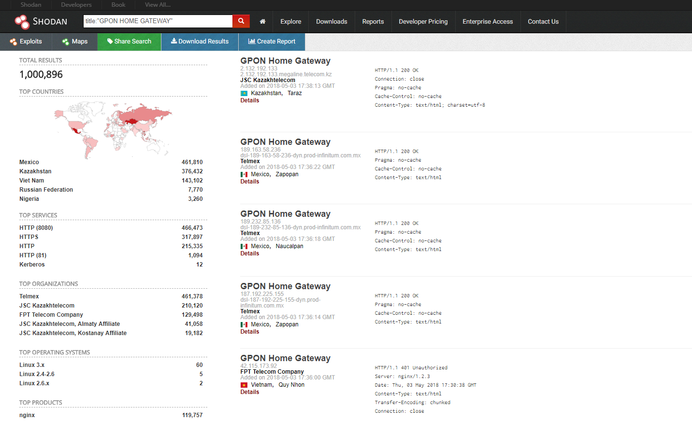
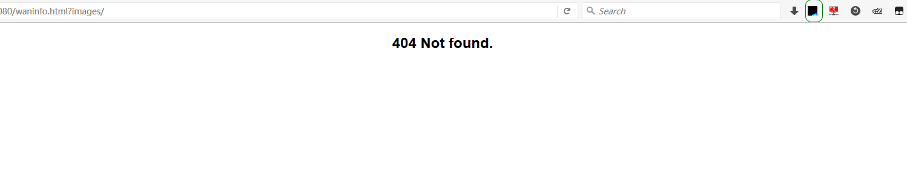

GPON光纤路由器漏：身份认证绕过漏洞（CVE-2018-10561）和命令注入漏洞（CVE-2018-10562）
GPON技术是现在非常流行的光纤无光源网络设备技术，国内主流运营商的家庭网关大多都采用GPON和EPON技术。国内GPON光纤路由器因为由ISP提供，暴露公网存量不明显，但仍可能收到该漏洞影响。此次由VPNMentor披露的GPON家用光纤路由器漏洞，分别涉及到身份认证绕过漏洞(CVE-2018-10561)和命令注入漏洞（CVE-2018-10562），两个漏洞形成的攻击链可以在设备上执行任意系统命令。
GPON模式家庭设备网关

身份认证绕过（CVE-2018-10561）
设备上运行的HTTP服务器在进行身份验证时会检查特定路径，攻击者可以利用这一特性绕过任意终端上的身份验证。
通过在URL后添加特定参数?images/，最终获得访问权限：
另外，URL 中含有 style/,script/ 时也可绕过验证。
命令注入（CVE-2018-10562）
该设备提供了诊断功能，通过ping和traceroute对设备进行诊断，但并未对用户输入进行检测，直接通过拼接参数的形式进行执行导致了命令注入，通过反引号`和分号;可以进行常规命令注入执行。
该诊断功能会在/tmp目录保存命令执行结果并在用户访问/diag.html时返回结果，所以结合CVE-2018-10561身份认证绕过漏洞可以轻松获取执行结果。
Exploit
1 | !/bin/bash |
漏洞利用&疑问
404 not found ？
URL后面添加了?images/使用浏览器访问大多会报404 Not found. 。

查看源码发现是函数 XWebInit 中判断了当前窗口是否为最顶层的框架。Web 管理页面由多个html页面组合而成，单独显示是被不允许的。我尝试用 burp 修改返回包，但显示仍然不完全。需要修改查看相关配置，建议直接对配置文件操作或执行相关命令。
1 | function XWebInit() |
关键文件
- web路径: /web/html
- 身份认证等配置：/etc/ath0.conf
时间线
- 2018-05-01 vpnmentor披露该漏洞